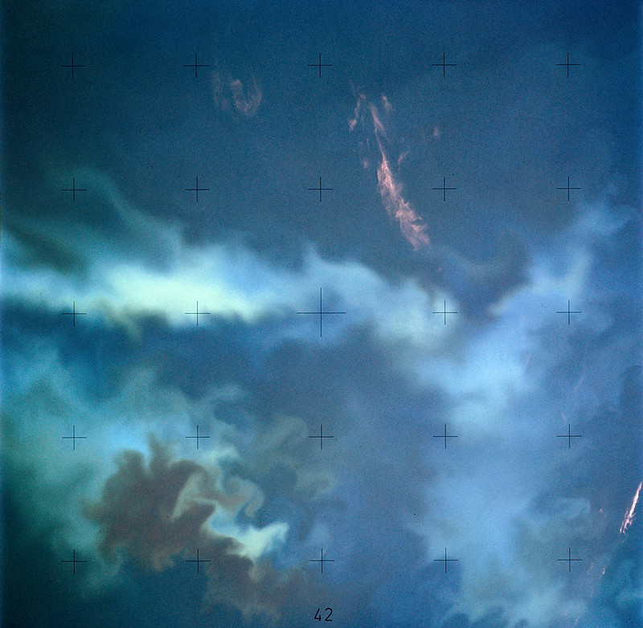

HOME
RESULTS
ALL
GLOBAL
COCCOLITHOPHORES
PICOPLANKTON
ABOUT
CONTACT
GLOBAL COCCOLITHOPHORE EXPLORATION
GOAL
Do you notice the turquoise “splotch” of water in the picture to the left? The average person may attribute this aesthetic turquoise spot to shallow depths or may not think much of it at all. Surprisingly, this “splotch” is actually made up of a plethora of single-celled organisms called coccolithophores. This random abundance of coccolithophores is called a “coccolithophore bloom”. These blooms develop as a result of various factors in the environment. Plotting the biomass of coccolithophores from current ocean temperatures to year 2100 ocean temperatures revealed a seemingly random distribution of increases and decreases of biomass. My goal is to make sense of this distribution through specific analysis of coccolithophore data and research on the plankton taxa and to contribute to the understanding of how coccolithophores and these blooms correspond to carbon cycling within the ocean.

Skylab 4 Earth View - Plankton blooms in the Falkland Current east of Argentina coast
ABOUT COCCOLITHOPHORES
By Robin Mejia. Image courtesy Dr. Alison Taylor. - [1] doi:10.1371/journal.pbio.1001087, CC BY-SA 4.0,
https://commons.wikimedia.org/w/index.php?curid=99404892
Coccolithophores
are
autotrophic, single-celled organisms
part of the phytoplankton community. The taxa is found most abundantly in temperate, subtropical and tropical regions. Coccolithophores are encased in a calcium carbonate shell, similar to the consistency of chalk. Extensive blooms of coccolithophores, essentially a rapid increase or accumulation of coccolithophores, are found in
nutrient depleted water
, making them most competitive in these types of stable, low nutrient environments. Other phytoplankton are unable to outcompete the coccolithophores in such conditions, enabling them to thrive in these habitats.
GLOBAL RESULTS AND ANALYSIS
Globally, the distribution of coccolithophores follows a similar pattern to the distribution of phytoplankton organisms grouped as a whole. Majority of coccolithophores are centralized in the northern and southern oceanic regions, as well as some northern and southern coastal regions. Little to no coccolithophores are found in the Pacific gyres, central Atlantic and central Indian ocean. This distribution of coccolithophores on a global scale can be attributed to nutrients availability in the oceanic regions.
Coccolithophores generally are able to thrive in water that is nutrient depleted.
For example, the Atlantic ocean and southern Indian ocean have lower nutrient levels compared to the Pacific Ocean. Correspondingly, we can see that coccolithophores thrive especially in these regions, namely the northern Atlantic region and southern Indian ocean, compared to the Pacific ocean, where we see significantly less biomass of coccolithophores. Upon initially looking at the Coccolithophore Current World Temperature plot (top) and the Year 2100 World Temperature plot (middle), variation between the two is not apparent. Although, the Difference plot (bottom) contradicts this visual conclusion immensely. Throughout the ocean, specifically within the northern and southern oceans, there is significant patchiness in terms of increases and decreases of biomass over time. This distribution is comparatively unique in relation to the distributions of other types of phytoplankton.
I hypothesize that these random increases are due to coccolithophore blooms developing as a result of competition structures and decreasing nutrients within the world’s oceans.
To explore this further, I am analyzing the specific southern Indian ocean region.
To read more about this, click on one of the images to the right!
Southern Indian Ocean Coccolithophore Exploration